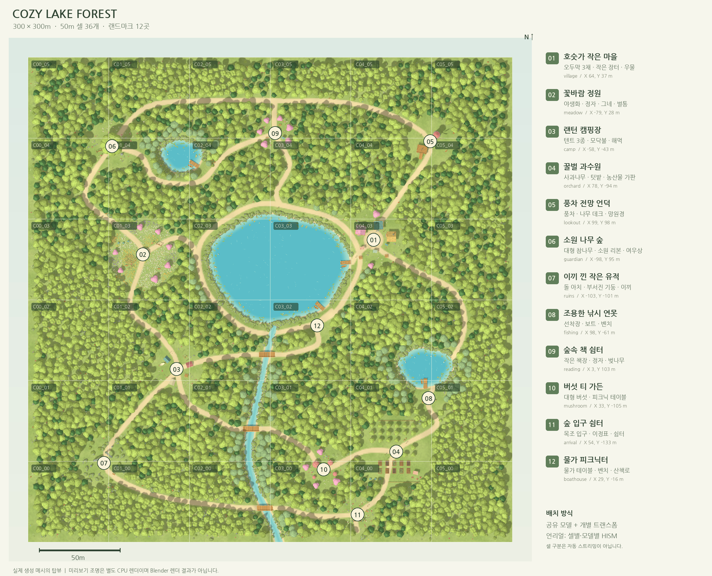
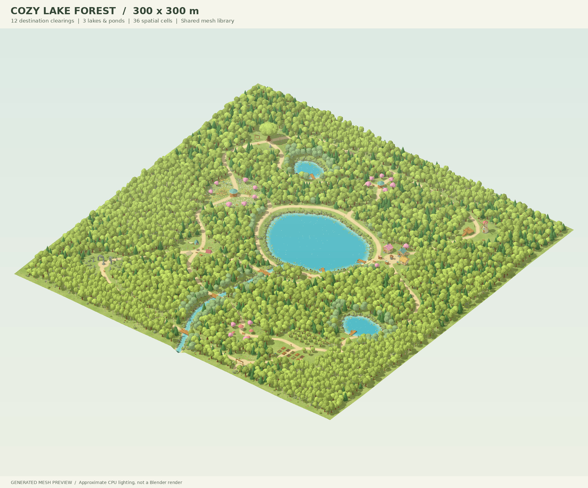
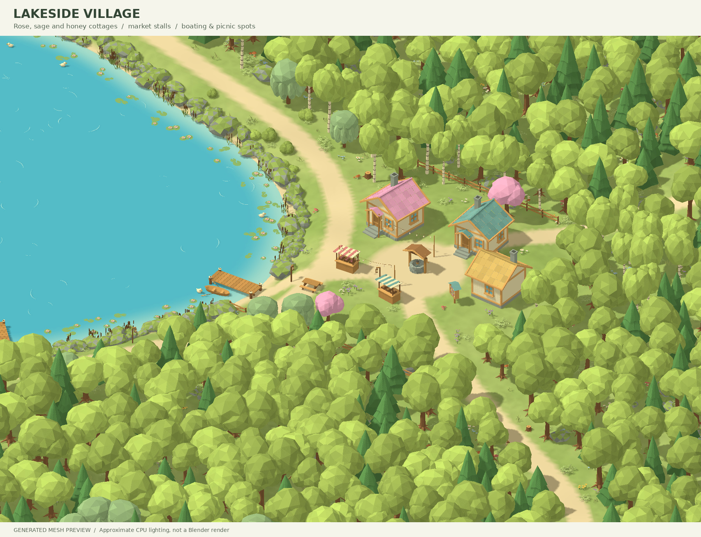
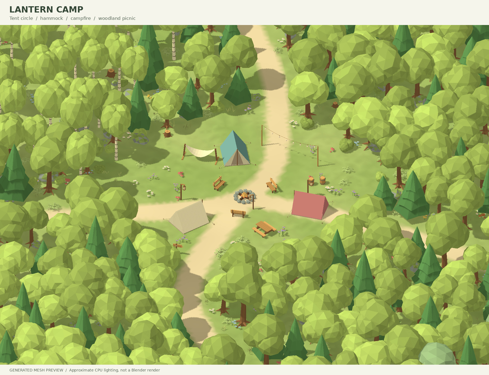
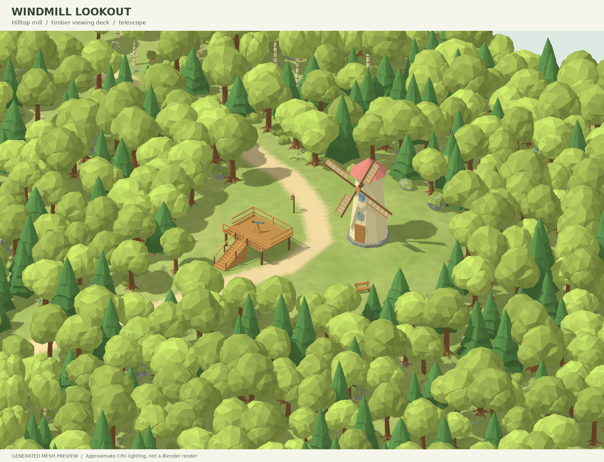
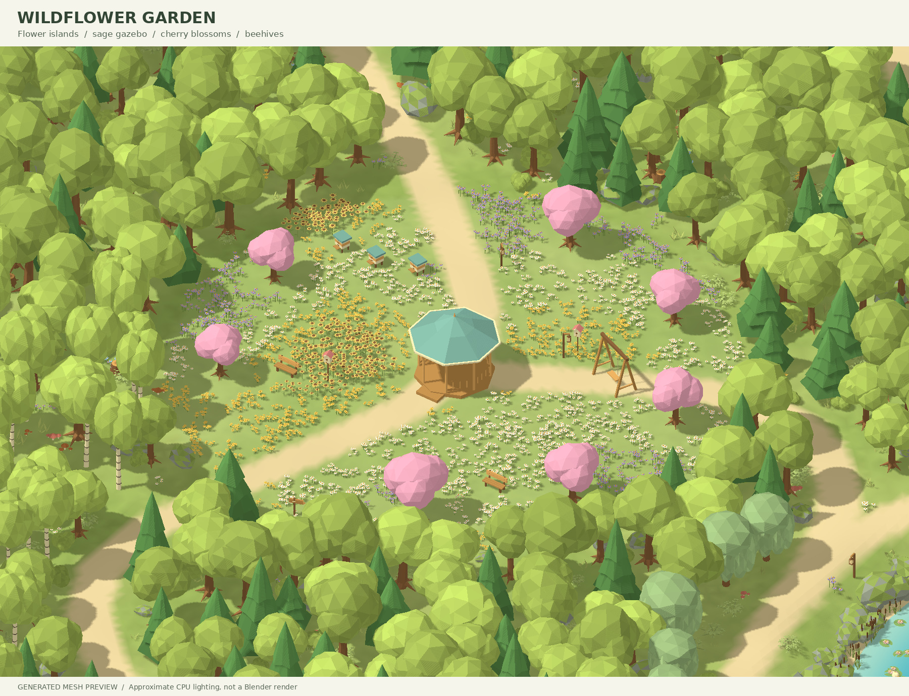
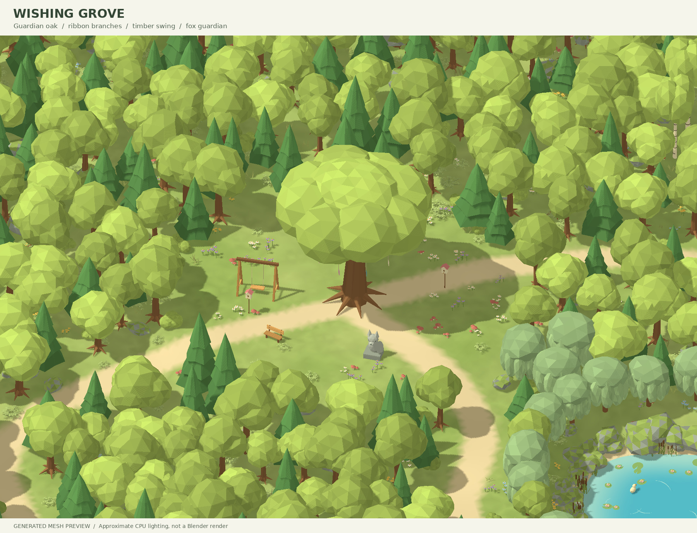

12곳의 랜드마크 · 배치 16,573개 · 고유 메시 127개
아래 이미지는 제공 스크립트의 실제 생성 메시와 배치를 별도 CPU 렌더러로 그린 미리보기입니다.Blender 렌더 결과는 아닙니다. 조명·재질·그림자는 Blender / Unreal에서 다르게 보일 수 있습니다.
300 × 300m 전체 배치 · 50m 셀 36개 · 산책 목적지 12곳

큰 호수와 두 연못, 산책길과 숲 사이의 작은 목적지

세 가지 지붕의 오두막, 우물, 장터와 선착장

텐트, 해먹, 모닥불과 숲속 피크닉 공간

풍차, 계단식 나무 데크와 망원경

야생화, 정자, 그네와 분홍 수관

큰 참나무, 뿌리와 리본 장식
